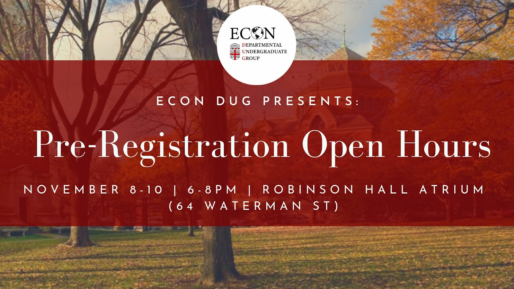

Econ Students of Color Group Resume Workshop
December 9, 2021
The Econ Students of Color Group hosted its inaugural event: a resume
workshop in collaboration with the CareerLab. Led by Peer Career Advisors, attendees received
specific advice and tips on how to create a clean and informative resume to be used in future
internship and job searches. Insomnia Cookies were provided.
Careers in Technology
December 2, 2021
The Econ DUG collaborate with the CS DUG to host a Careers in Technology
panel. Attendees interested in careers in technology heard from and recent Brown alumni about their
experiences recruiting and working for different technology companies.

Pre-Registration Open Hours
November 8-10, 2021
The Econ DUG hosted Pre-Registration Open Hours, where attendees chatted
with upperclassmen and DUG members concentrating in Economics and the other joint concentrations,
asked questions about which Economics classes to take next, and got advice for the upcoming semester
and beyond.
Diversity in Consulting and Finance Internships
November 2, 2021
The Econ DUG hosted a Diversity in Consulting and Finance Internship
panel, where attendees heard from former interns about their experiences recruiting and working for
companies in these industries. Insomnia Cookies were provided.
Halloween Movie Night: The Social Network
October 23, 2021
The Econ DUG hosted a Halloween Movie Night, where attendees took a break from midterms to watch The
Social Network, a movie about the controversial founding of Facebook. Pizza, popcorn, and candy were
provided.
Coffee on the DUG
October, 2021
The Econ DUG hosted Coffee on the DUG, where we paired and paid for a select number of students
interested in Economics to meet each other over coffee. A $10 Starbucks gift was provided to each
student.
Career and Academic Success as a UFLi Students
April 15, 2021
The Econ DUG collaborated with the UFLi Center to host a Panel on Career and Academic Success as a
UFLi Student. Attendees learned how current UFLi students and alumni navigated their time at Brown
and beyond. The panel included a Public Policy Extern at Facebook, an entrepreneur who created an
education startup that addresses educational disparities, and the Co-founder of FirstGens@Brown.
Conversations on Race and Capitalism
April 2, 2021
The Econ and Sociology DUG collaborated to host Conversations on Race and
Capitalism. This half-day symposium introduced the concepts of race and capitalism and how they
intersect in the construction of inequality and stratification in the United States. Through
keynotes and presentations on original work from academic experts, corporate leaders, and students,
undergraduates learned about racial capitalism and its historical and contemporary implications.
Graduate School Workshop Part 2: Conversations with Economists of Color
March 20, 2021
The Econ DUG hosted the second installment in our Graduate School Series,
Conversations with Economists of Color. Attendees heard speakers, including professors and graduate
students of color from the Department of Economics, answer guided questions. Attendees were entered
into a raffle for three $15 Amazon gift cards.
Career Coffee Chats
March 27 and 28, 2021
The Econ DUG hosted Career Coffee Chats, where students interested in
having 1-on-1 conversations with upperclassmen/alumni working in marketing at Microsoft, investment
banking at Goldman Sachs, or consulting at McKinsey had the opportunity to sign up and RSVP for a
slot.
Concentration Declaration & Pre-Registration Open Hours
March 11, 2021
For sophomores intending to declare a concentration in Economics (or any
of the joint concentrations) and first-year students wondering which Econ classes to take next, the
Econ DUG hosted a Concentration Declaration & Pre-Reg Open Hours event. Attendees learned all about
the concentration declaration process and which classes to take next from panelists featuring Econ
Peer Advisors and Econ DUG members.
How to Succeed During a Summer in Finance
February 24, 2021
The Econ DUG hosted How to Succeed During a Summer in Finance, a panel
geared toward helping students be successful in their first internship/job and learn about the
expectations of a career in finance. Attendees heard students who have interned in the past speak
about their experiences and offer useful tips to help them secure a return offer.
Graduate School Workshop Part 1: Is Graduate School Right for Me?
February 22, 2021
The Econ DUG hosted the first installment in our Graduate School Series,
Is Graduate School Right for Me? Following an in-depth presentation about the graduate school
application process from Professor Shapiro, Economics Ph.D. advisor, attendees had the opportunity
to talk to panelists, including current Ph.D. candidates at Harvard, Columbia, and MIT, and
upperclassmen who recently completed the application process.
Economics Student Social
Feburary 11, 2021
The Econ DUG hosted an Economics Student Social, where attendees hopped
on Zoom to find study buddies to pset with in course-specific breakout rooms. Three attendees were
randomly selected to win a $10 Amazon gift card.
Diversity in Private Equity Panel
January 30, 2021
The Econ DUG collaborated with Brown Entrepreneurship Program’s Diversity
& Inclusion Team to put on a Diversity in Private Equity Panel. An incredible group of panelists
talked about their experience in the Private Equity field, followed by an open Q&A session with
attendees.
Consulting vs. Finance Panel
November 18, 2020
The Econ DUG collaborated with the Brown Consulting Club to host a
Consulting vs. Finance Panel. The panel showcased undergraduate and alumni panelists for a
comprehensive conversation on the consulting and finance industries, giving attendees the
opportunity to learn firsthand what it's like to enter these fields.
Speed Networking with Alumni
November 14, 2020
The Econ DUG collaborated with Women in Business (WIB) and Socially
Responsible Investment Fund (SRIF) to host Speed Networking with Alumni, featuring Brown alumni in
the following business areas: Investment Research @ Goldman Sachs, Sales & Trading @ Citi, Wealth
Management and Quantitative Finance @ Morgan Stanley, Quantitative Research @ AQR, Account
Strategist @ Google, Research @ NY Fed, Economic Consulting @ NERA and Analysis Group.
Pre-Registration Open Hours
November 12, 2020
The Econ DUG hosted Pre-Registration Open Hours, where attendees chatted
with upperclassmen and DUG members concentrating in Economics and the other joint concentrations,
asked questions about which Economics classes to take next, and got advice for the upcoming semester
and beyond.
FREAKonomics Kahoot Night
October 29, 2020
To get into the Halloween spirit, the Econ DUG hosted FREAKonomics Kahoot
Night, where attendees teamed up with others to play multiple rounds of Economics-themed Kahoot. The
top players in each round won an Amazon gift card.
Intro to Finance Panel
October 20, 2020
The Econ DUG hosted an Intro to Finance Panel, featuring upperclassmen
working in investment banking, sales & trading, and wealth management. The event began with an
overview of the finance recruiting timeline, including some best tips for the process, then opened
up to a Q&A with seniors at Morgan Stanley, JP Morgan, Barclays, and Evercore.
Breaking into Harvard Business School
September 19, 2020
The Econ DUG collaborated with Women in Business (WIB) to host Breaking
into Harvard Business School. Attendees heard from Brown alumni who are MBA candidates at Harvard
Business School and learned how to make their B-School application stand out. This event was open to
all Brown students.
Pre-Registration Open Hours
August 7, 2020
The Econ DUG hosted Pre-Registration Open Hours, where attendees chatted
with upperclassmen and DUG members concentrating in Economics and the other joint concentrations,
asked questions about which Economics classes to take next, and got advice for the upcoming semester
and beyond.
Finance 101
Feburary 26, 2020
The Econ DUG hosted an event to answer questions such as: What exactly is
finance, and what prepares you for the industry? Do you know what you need to do to get a finance
internship? What are Super Days? What do you actually do when you have a job in finance?
Attendees received an overview of what working in the finance industry actually entails, learned
more about how they can become involved in finance both in and outside of Brown, and more. Insomnia
Cookies were provided.
Consulting 101
Feburary 25, 2020
The Econ DUG hosted an event to answer questions such as: What actually
is consulting? What do consultants do? How do you network for it? How do you get a summer internship
doing it?
Attendees received an overview of what working in the consulting industry actually entails, learned
more about how they can become involved in consulting both in and outside of Brown, and more.
Insomnia Cookies were provided.